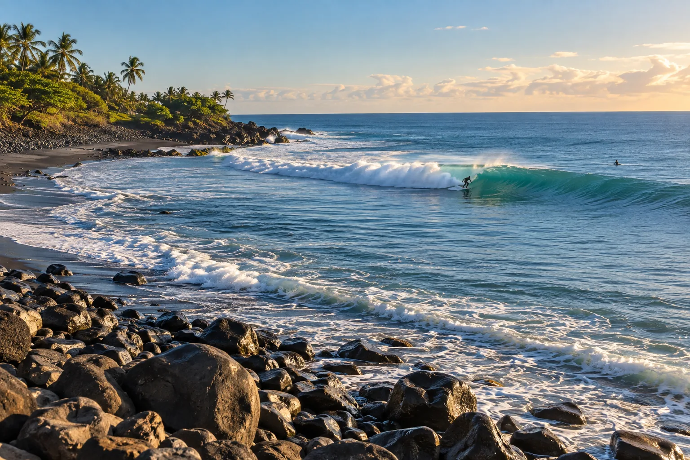

El Zonte
La Libertad, Salvador · surf

Village de surf aux droites de pointe sur galets, au cœur de « Surf City ». Des vagues régulières et chaudes.
- Lieu
- La Libertad, Salvador
- Niveau
- Intermédiaire
- Activités
- surf
- Type d'eau
- Mer / océan
- Coordonnées
- 13.49, -89.44 (position approximative du secteur)
Dangers à connaître
- Galets glissants.
- Vagues puissantes par grosse houle.
Le conseil d'Ocean Buddy
Chausse des chaussons pour marcher sur les galets volcaniques.
Ouvrir dans Ocean Buddy Télécharger sur l'App Store
Source : Fiche Ocean Buddy · septembre 2026 · à vérifier localement.